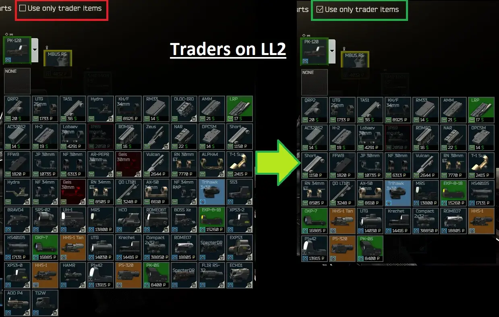
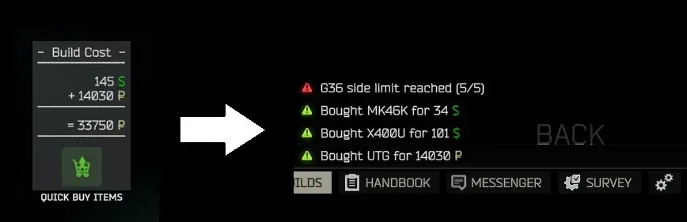
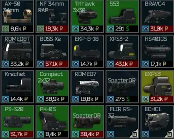
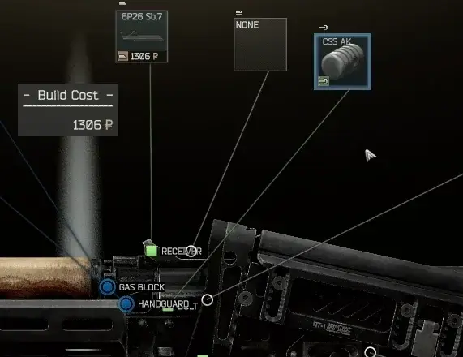
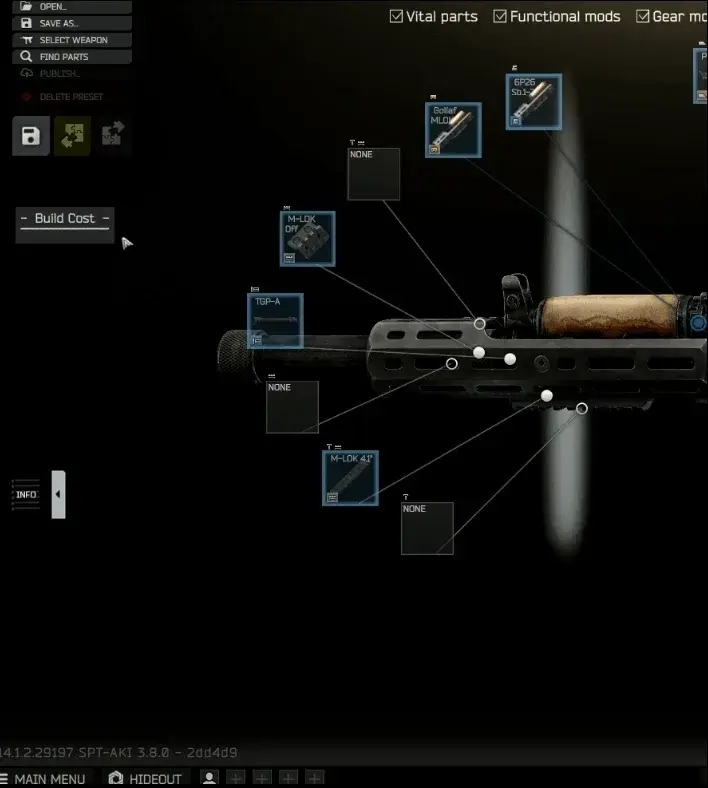
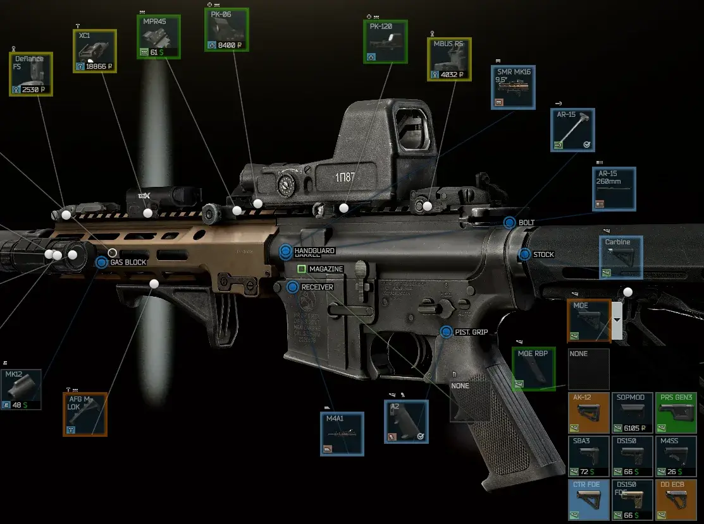
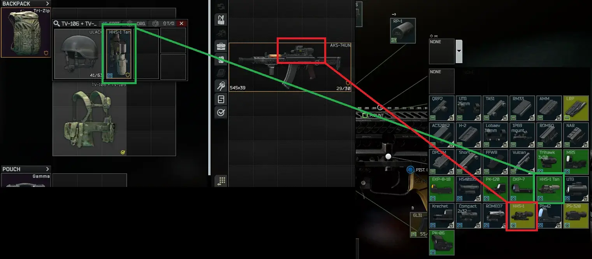
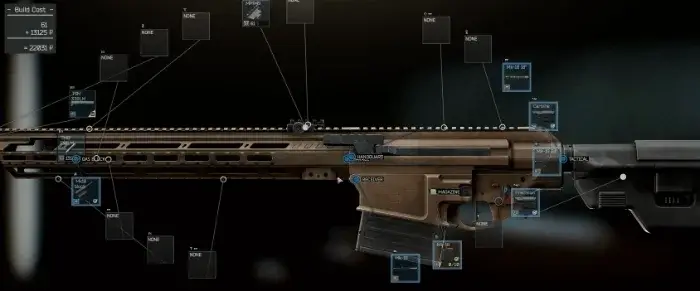
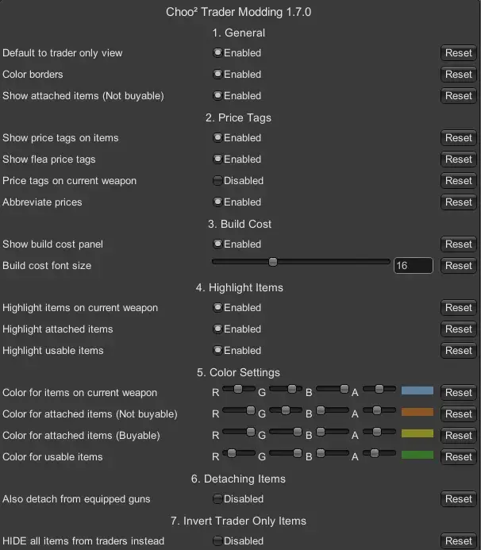
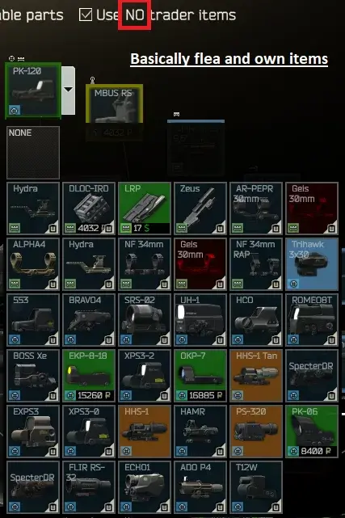

Trader Modding And Improved Weapon Building
- Downloads
- 99,400
- Favourites
- 90
- Mod lists
- 179
Features
Adds a new checkbox in the weapon preset screen to only show trader items, and your own items ofc.
Shows item prices from current Traders (Supports custom traders)

Quick Buy Button

Also shows flea prices if the item is available there and the trader only checkbox is unticked:

Movable Build Cost Panel:

Button to detach items in use elsewhere (Doesn’t touch equipped guns by default):

Highlights parts (Colors customizable in F12):
- Directly usable (Loose in stash)
- **Already present in the current gun build
- Attached to other stuff (But purchasable from traders)
- Attached to other stuff (NOT purchasable)
Colored borders while modding:

Shows items on PMC, as well as in Rigs etc.

QoL change: Ability to zoom in/out with the mousewheel for those big chonkers

Everything is configurable in the F12 menu:

There is also the option to invert the Trader only view to show NO items from traders instead (Essentially flea and own items only):

If you have any issues, let me know
I tested everything thoroughly, without crashes and issues, but you never know
Credit to warafor the awesome original mod,
giving me the inspiration to push it to the next level.
Just extract the .zip file with BepInEx and user folder to your SPT folder.
**If you are upgrading from a version before 1.7.0: Please delete the folder “user/mods/ChooChoo-TraderModding-1.2.0”
Should you have version 1.0.0 installed, before installing the latest version, remove:
Wara-TraderModding.dll in BepInEx/plugins Wara-TraderModding-1.0.0 folder in user/mods
I changed the server mod to automatically get all custom traders that are installed.
Should work, but let me know if you notice any weird issues.
To further improve the QoL when modding your guns, the modding stats helper from wara shows stat comparisons in a nice Tooltip
Version
2.1.1
- Logic fixes for Trader restrictions, hopefully fixing issues with Custom Traders people had.
- Tested with SPT 4.0.13 and Epic’s All in One 4.0.7, with all items showing up properly and the Badger trader that comes with it behaves correctly as well.
- Note: Some buy restrictions are weird, and the usual Big Silly Goose stuff in other areas.
Should there be any Custom Trader that doesn’t work, let me know.
Version
2.1.0
- Code refactor for performance, UI should feel way more responsive with less freezing up when the modding view updates.
- Buy restrictions are correctly handled, items are no longer shown as available from traders if the personal limit for an item was reached on all traders
- Sorting of mod items in the drop down menus by their short name (Might be wonky sometimes)
- Random fixes
Note: Multiple of the same item in the build behave weirdly and always have, keep that in mind. I don’t have the will to fix BSGs logic for that :)
P.S. If my refactor broke something, please let me know.
Version
2.0.1
Update for SPT 4.0.X
- New quick buy button to buy from traders to streamline modding! (Flea purchases not yet implemented). If you notice any issues with it let me know, so far everything worked as expected. :)
Version
1.10.0
Update for SPT 3.11.X
As usual: If you find any bugs, let me know.
All looked good on my end, so far…
Version
1.9.0
Update for SPT 3.10.X
Sorry for the long wait, and thanks to Fried Engineer for the update.
I quickly checked for functionality, and so far it looks good, though I did not test all edge cases (Custom traders etc.)
Version
1.8.0
Update for SPT 3.9.X
Did not do excessive testing, but everything seems to work as expected.
Lemme know if something is wrong.
Currently short on time, so might not immediately fix specific stuff.
Version
1.6.3
- Update to SPT 3.8.1 (Should support all 3.8.X versions of SPT)
Please update your SPT install to the latest version (3.8.1 at time of upload) to prevent compatibility issues that might occur with other mods.